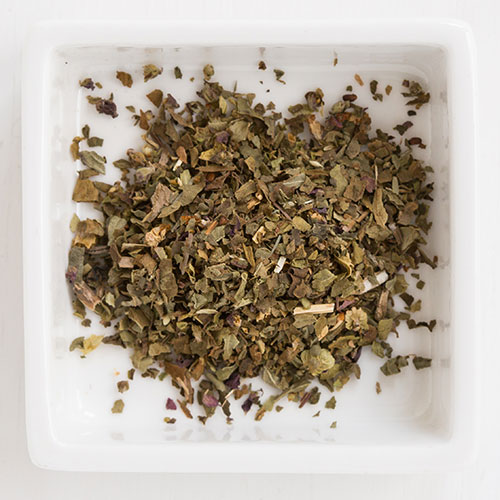
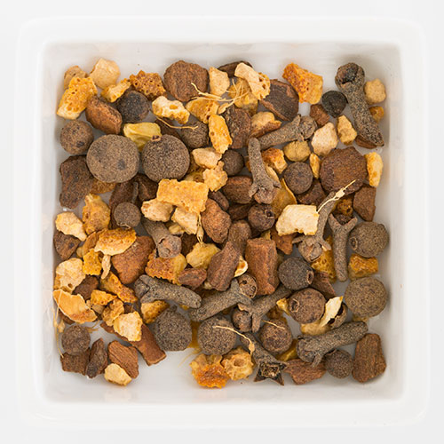
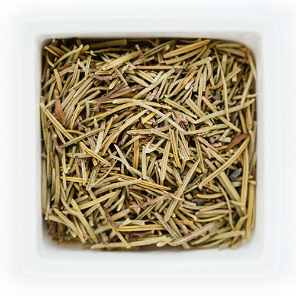
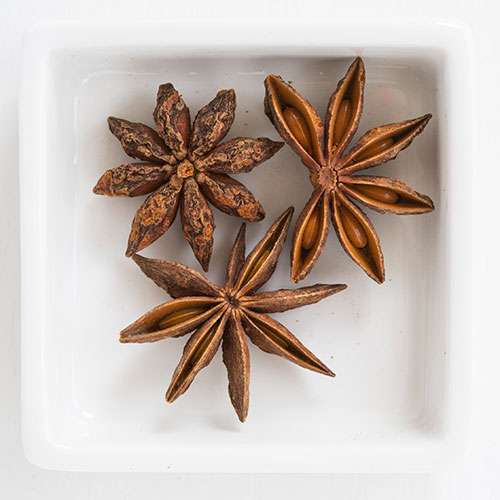
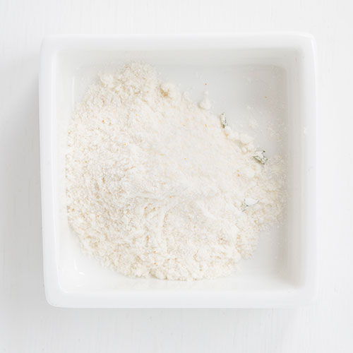

Alfalfa Seeds

Alfalfa is a well-known fodder crop with high nutrition value for many types of livestock. Alfalfa leaf makes a pleasant tasting, tonifying tea and blends well with other herbs.
Allspice

Apple Pie Spice

Basil
Bay Leaves

Black Pepper

Cardamon

Celery Salt

Chicken-flavor Broth Powder

Chile Peppers

Chives

Cider Mate Mulling
Cumin

Dill Seed

Lavender Flowers

The fresh, sweet aroma of lavender has relaxing and uplifting qualities that leave users with a sense of calm and balance, making it one of today's most popular scents. Lavender is a gentle, multi-purpose herb. Lavender flowers have been used throughout history, to encourage love and passion, as a soothing component in skin care, hair care and cosmetic products, and in an array of perfumes, colognes and bath products.
Nutmeg

Oregano Leaf

Peppermill

Pizza Seasoning

Rosebuds

Rosemary
Saffron

Savory Winter

Star Anise
Tarragon Leaf

Veg Broth Powder
Zaatar